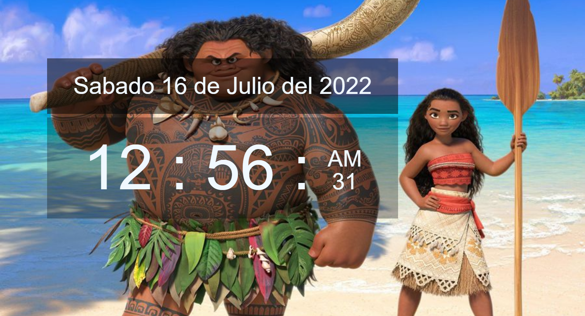
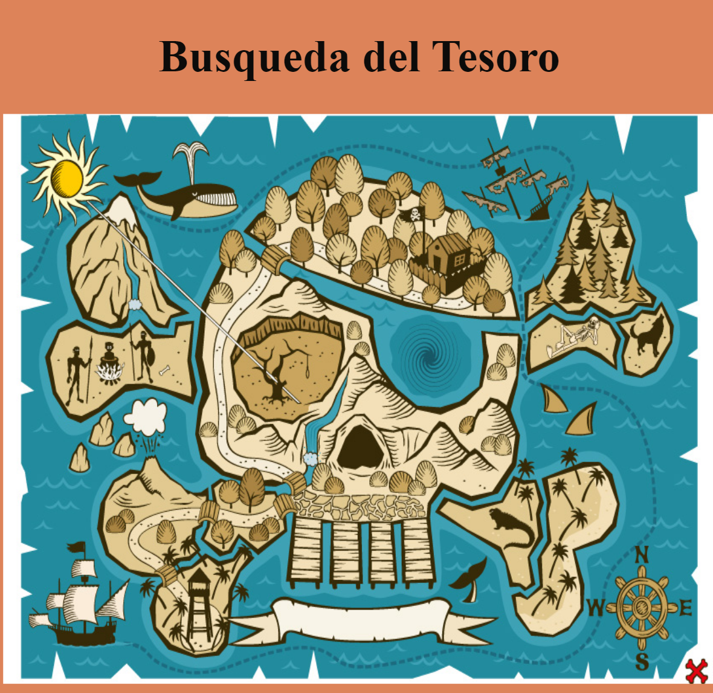
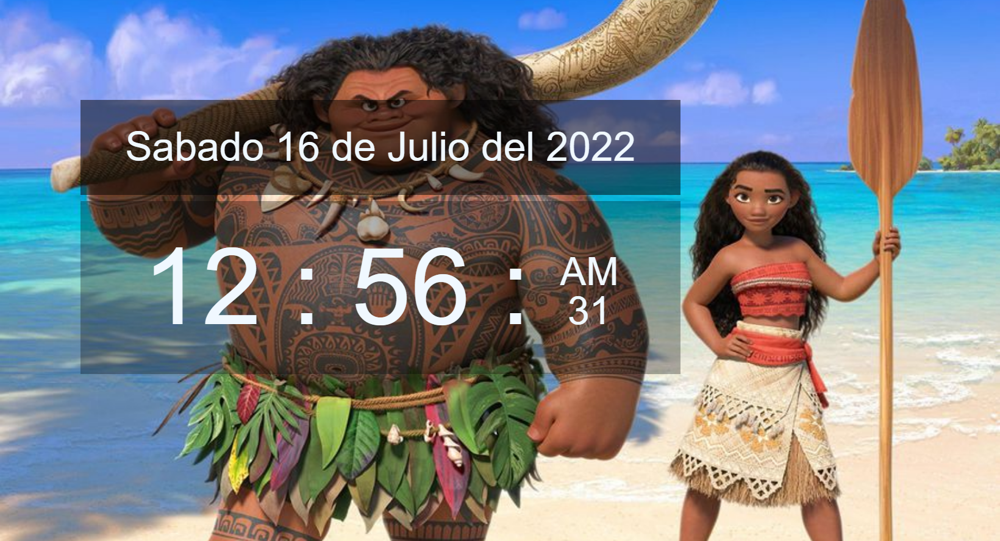
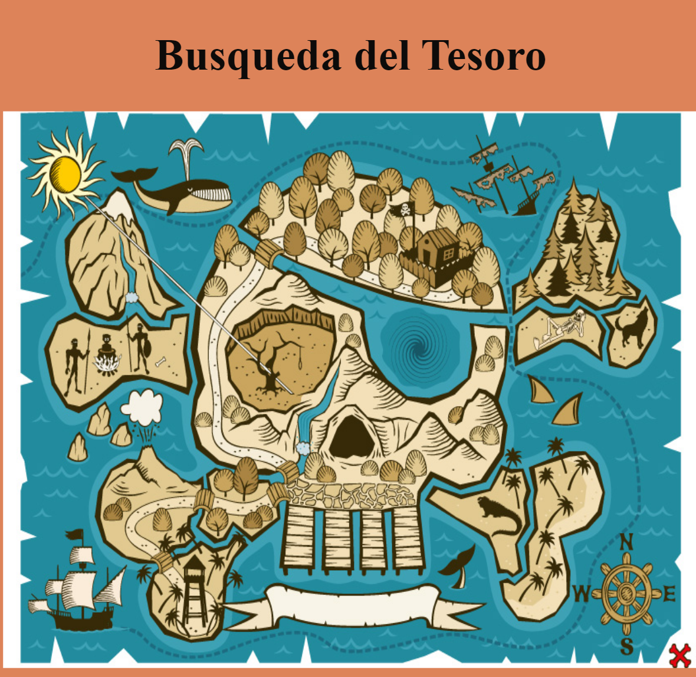

Jorge Lucas Barroca
Desarrollador Web
Argentina
Informacion Personal
Actualmente desempleado, hace Un año y medio que estoy en el mundo del desarrollo web, me gusta aprender cosas nuevas, trabajar en equipo para aprender de personas con experiencia.
Me considero proactivo, me gusta investigar para solucionar problemas y seguir aprendiendo.
Tecnologias que aprendi
Las tecnologias que aprendi son HTML, CSS, JS, aunque aun las sigo pueliendo y aprendiendo.
Actualmente estudiando Python, PHP, Reactjs, y PowerBi.